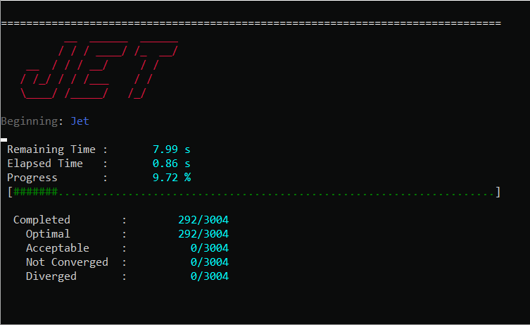

PSIOPT#
Having an efficient method of solving sparse non-linear optimization problems is critical to the success of any trajectory optimization software. While several excellent optimization software packages exist, they all require either commercial products (KNITRO, SNOPT) or are reliant on other commercial and restrictively licensed products for optimum performance (IPOPT). Therefore, in order to keep ASSET completely open source, the Parallel Sparse Interior-point Optimizer (PSIOPT) was developed and incorporated into the library. PSIOPT is built to solve non-linear programs (NLP) expressed in standard form as shown in Eq.(1).
In short, it seeks to minimize a scalar valued objective function \(f(\vec{x})\) of design variables, \(\vec{x}\), subject to equality, \(\vec{h}(\vec{x})\), and an inequality, \(\vec{g}(\vec{x})\), constraints on those variables. PSIOPT adopts a primal-dual-interior-point approach to convert the problem into an equivalent bound constrained saddle-point optimization problem of the Lagrangian function defined in Eq.(2).
Additional non-negative slack variables, \(\vec{s}\), are added to each inequality constraint to capture the distance from the constraint boundary. An additional term, the barrier objective, is then added that penalizes solutions near the edge of the feasible region by taking the negative log of each slack variable. The barrier objective is modulated by the single barrier term, \(\mu\), which is adaptively reduced throughout the optimization process to allow for active inequality constraints to approach the boundary of the feasible region. In addition, Lagrange multipliers are added for the equality, \(\vec{\nu}\), and inequality, \(\vec{\lambda}\) constraints and appended to the Lagrangian. The solver then seeks stationary points of the Lagrangian function using a full-space Newton method. The iteration matrix can be seen in Eq.(3) below. Similar to IPOPT, a positive multiple of the identity matrix is added to the Hessian of the Lagrangian to ensure that the iteration matrix has the correct inertia signature at each iteration. The algorithm will update \(\delta\) every iteration to keep this perturbation as small as possible.
The first and second derivatives of the objectives and constraints appearing in Eq.(3) are calculated analytically by ASSET’s VectorFunction type system. Since computation of first and second derivatives is a computationally expensive task, the solver automatically detects independent functions and evaluate them in parallel on multi-core CPUs. To solve the resulting linear-system, the software leverages the state of the art sparse-symmetric-indefinite solver MKL PARDISO.
PSIOPT Usage#
Each interface for defining optimization problems in ASSET (ex: OptimalControlProblem, ode.phase )
has as its own instance of PSIOPT attached as a member variable of the class.
Formulation and solution of the optimization problem is always handled through the respective interface,
but users can use this reference to modify PSIOPT’s settings . A list of common settings
and their default and suggested values are listed in the table below. In all cases these can be set by using the .set_XXX(value) method
where XXX is replaced by the name of the setting
import asset_asrl as ast
ocp = ast.OptimalControl.OptimalControlProblem()
# Define problem
# .
# .
# .
ocp.optimizer ## Reference to ocp's psiopt instance
ocp.optimizer.set_MaxIters(100)
ocp.optimizer.set_OptLSMode("AUGLANG")
ocp.optimizer.set_BoundFraction(.99)
Parameter |
Description/Tips |
(type) Default Value |
(Valid)/[Suggested] Range |
|---|---|---|---|
MaxIters |
Maximum number of iterations the solve or optimization routines will run before returning with NO SOLUTION FOUND. |
(int) 500 |
(>0) [100,1000] |
MaxAccIters |
Maximum number of consecutive acceptable iterations the solve or optimization routines will run before returning with ACCEPTABLE SOLUTION FOUND. An acceptable iterate is defined as having EconsInf,IConsInf,KKTinf, and all being less than their specified acceptable value (Acc###tol). To disable acceptable solutions set this to be greater than or equal to MaxIters. |
(int) 50 |
(>0) [50,300] |
###tol (### = KKT,ECon,ICon,Bar) |
Convergence tolerances for the KKT/optimality, equality, inequality, and barrier infeasibilities. |
(double) 1.0e-6 |
(>0.0) [1.0e-6,1.0e-12] |
Acc###tol (### = KKT,ECon,ICon,Bar) |
Acceptable convergence tolerances for the KKT/optimality, equality, inequality, and barrier infeasibilities. |
(double) 1.0e-3 |
(>0.0) [1.0e-3,1.0e-5] |
Div###tol (### = KKT,ECon,ICon,Bar) |
Diverging tolerances for the KKT/optimality, equality, inequality, and barrier infeasibilities. Algorithm will terminate with SOLUTION DIVERGING if value exceeds this number. |
(double) 1.0e15 |
(>0.0) [1.0e10,1.0e15] |
MaxLSIters |
Maximum number iterations a line search algorithm will take before accepting the step and continuing to next full iteration. |
(int) 2 |
(>=0) [1,4] |
alphaRed |
Amount by which a line search algorithm divides the current step size when it fails to reduce the merit function. |
(double) 2.0 |
(>1.0) [1.5,3.0] |
OptLSMode |
Line Search algorithm to be used by the optimization algorithm. It is disabled by default, but we suggest enabling the L1 penalty function line search or Augmented Lagrangian line search for sensitive problems with poor initial guesses. |
(string) ‘NOLS’ |
[‘AUGLANG’,’L1’,’NOLS’] |
SoeLSMode |
Line Search algorithm to be used by the solve algorithm. It is disabled by default. |
(‘string’) ‘NOLS’ |
[‘AUGLANG’,’L1’,’NOLS’] |
OptBarMode |
Adaptive barrier parameter method to be used by the optimization algorithm. Set to the LOQO centrality heuristic by default. The other option, ‘PROBE’, is the Mehrotra probing heuristic. It can converge in fewer iterations than ‘LOQO’ in certain circumstances but requires an extra linear solve of the KKT matrix. Thus it is typically slower than the LOQO algorithm. |
(string) ‘LOQO’ |
[‘LOQO’,’PROBE’] |
SoeBarMode |
Adaptive barrier parameter method to be used by the solve algorithm. Set to the ‘LOQO’ centrality heuristic by default. The other option, ‘PROBE’, is the Mehrotra probing heuristic. It can converge in fewer iterations than ‘LOQO’ in certain circumstances but requires an extra linear solve of the KKT matrix. Thus it is typically slower than the ‘LOQO’ algorithm. |
(string) ‘LOQO’ |
[‘LOQO’,’PROBE’] |
deltaH |
Size of the first and smallest perturbation, \(\delta\), that will be added to the diagonal of the KKT matrix to correct for indefiniteness. |
(double) 1.0e-5 |
(>0.0) [1.e-8,1.e-4] |
incrH |
Factor by which a the Hessian perturbation, \(\delta\), will be increased when the previous value failed to correct the KKT matrix’s inertia. |
(double) 8.0 |
(1.0) [4.0,10.0] |
decrH |
Factor by which a the Hessian perturbation, \(\delta\), will be decreased each iteration. |
(double) .33 |
(<1.0) [.1,.5] |
BoundFraction |
Fraction of the full step to the boundary that the slack variables or inequality constraint multipliers will take. Must be less than 1.0 to prevent slacks and multipliers from becoming negative. Values close to one will lead to faster convergence when near the solution but can harm robustness when the initial guess is poor. |
(double) .98 |
(<1.0) [.95,.999] |
QPOrderingMode |
Fill-in reducing ordering applied to the KKT matrix by MKL-Pardiso. The default, ‘METIS’, is the METIS nested dissection algorithm and generally results in the best scaling of matrix factorization with the number of threads. The alternative, “MINDEG”, the minimum degree algorithm, generally results in faster single threaded factorizations, but does not scale well with thread count. Use “MINDEG” when using Jet and “METIS” otherwise. |
(string) “METIS” |
[“METIS”,”MINDEG”] |
PrintLevel |
Verbosity of the console output. 0 is full output, and higher values will produce less output. Set to 3 or higher for no output. |
(int) 0 |
[>= 0] |
After defining a problem, and potentially modifying the optimizer settings, an optimization problem interface is used to invoke one of or a sequence of PSIOPT’s algorithms as
shown below. The optimize algorithm will seek to minimize the objective function and also satisfy the equality and inequality constraints. The solve algorithm ignores the objective and
attempts only to find a solution to the equality and inequality constraints. If you are only trying to solve a system of equations and do not have an objective
function, you should almost always use the solve algorithm rather than invoking optimize.
You may also invoke the solve and optimize algorithms in sequence
using solve_optimize as shown below. For example, it can often be more robust to call solve first when optimizing so that the optimize algorithm will start from a feasible point.
Additionally, it often happens that the optimize algorithm will be able to minimize the objective function considerably from its initial value,
but have difficulty exactly satisfying the optimality and constraint tolerances simultaneously.
In these cases, it is practical to feed this non-converged solution to the solve algorithm in the hopes of finding a nearby solution that satisfies the constraints.
For the combined call sequences, the function returns the convergence flag of the last algorithm invoked. If you need the convergence flag for each specific algorithm, they should be called
separately.
flag = ocp.solve() # ocp transcribes problem and calls psiopt's solve algorithm
flag = ocp.optimize() # ocp transcribes problem and calls psiopt's optimize algorithm
flag = ocp.solve_optimize() # Calls solve then optimize, functionally equivalent to calling the two lines above
flag = ocp.solve_optimize_solve() # Calls solve then optimize, then calls solve IF optimize fails to converge
flag = ocp.optimize_solve() # Calls optimize, then calls solve IF optimize fails to converge
The returned convergence flags are enumerator types defined in ast.Solvers.ConvergenceFlags, and their meanings and integer values are given in the table below. Should you need to
use the flags in your code, it is recommended to compare flags to their enumerator rather than integer values as shown below, in case that we add more flags in the future.
Cflags = ast.Solvers.ConvergenceFlags
flag = ocp.optimize()
if(flag== Cflags.CONVERGED):
print("Success")
elif(flag== Cflags.ACCEPTABLE or flag == Cflags.NOTCONVERGED):
ocp.solve()
elif(flag== Cflags.DIVERGING):
exit()
Flag |
Description |
Integer Value |
|---|---|---|
CONVERGED |
The algorithm fully converged to a solution satisfying user specified EContol,IContol, Bartol, and KKTtol (if optimizing). |
0 |
ACCEPTABLE |
The algorithm has terminated because it observed MaxAccIters number of consecutive iterates that all satisfy user specified AccEContol,AccIContol, AccBartol, and AccKKTtol (if optimizing). This prevents the algorithm from iterating until MaxIters is reached, if full tolerances cannot be exactly satisfied, and no progress is being made. |
1 |
NOTCONVERGED |
The algorithm has run form MaxIters number of iterates with out finding a solution satisfying user specified EContol,IContol, Bartol, and KKTtol (if optimizing). |
2 |
DIVERGING |
The algorithm has terminated immediately because it encountered either a NaN, Inf, or number larger than the user specified DivEContol,DivIContol, DivBartol, and DivKKTtol in constraints or gradient |
3 |
Threading#
By default, PSIOPT will set the number of threads used to parallelize function evaluations to be equal to the number of hardware threads
on your machine up to a maximum of 16. So if your computer has 10 cores and 20 threads (ex: i9-10900k), only 16 threads will be used for function evaluations by default.
Likewise by default, PSIOPT will set the number of threads used to factor KKT matrices to be equal to the number of physical cores on your machine up to a maximum of 8.
So, if your computer has 10 cores and 20 threads, only 8 threads will be used for matrix factorization by default. Based on experience, this an appropriate
threading allocation to solve single problems as fast as possible on most desktop machines. In our experience KKT matrix factorization does not scale beyond
8 threads on most problems. Furthermore, applying too many threads to function evaluations on small to medium sized problems can actually degrade performance.
However, you can manually set the thread count by using the .setThreads member function of a phase or OptimalControlProblem. If speed is of concern we recommend you play around with
these parameters to find the best option. However, we should note that if you are trying to maximize throughput by running ASSET in multiple processes simultaneously on your desktop or on a server,
you should almost always set the optimizer to run-serially to prevent over-subscription of the CPU.
phase.setThreads(1,1) # force to run serially on a single thread only
phase.solve_optimize()
ocp.setThreads(FuncThreads = 20 ,KKTThreads=20) # Use more than default number of threads
ocp.Phase(0).setThreads(20,20) #not necessary, will be overridden by the settings of the ocp
ocp.optimize()
Output#
When invoking one of PSIOPT’s algorithms with a PrintLevel of 0, the solver will produce the console output scroll shown in the figure below. The current objective
and constraint/optimality errors as well as other relevant algorithm parameters are displayed at each iterate. The meaning of each column is given in the table below.
The constraint and optimality feasibilities are color coded according to their value. The color scheme progresses from dark red to orange, to yellow, to green as the
value of the feasibility approaches user specified tolerances. When the value is yellow the current value satisfies the corresponding Acc###tol and likewise when it is green it satisfies ###tol.
Additionally, the right hash mark of ‘Prim Obj’,’Barr Obj’,’KKT Inf’,’ECons Inf’, and ‘ICons Inf’ are color coded to show whether the current value is a decrease (green) or increase (red) from the previous iterate.
The full console is 119 characters wide, which will fit in a standard console on Windows. However, most Linux terminals are not wide enough by default, so you should widen your terminal if you want to be able to
make sense of the output. While the console is (in its author’s opinion) quite nice to look at, it has non-negligible cost to print, so you should probably suppress output if throughput and performance are of concern.
You can suppress some or all of the output by setting PrintLevel to a value greater than 1.
{kind=link}
Parameter |
Description |
|---|---|
Mu Val |
Value of the barrier parameter, \(\mu\) , at the current iterate . |
Prim Obj |
Value of the primal objective, \(f(\vec{x})\) , at the current iterate . |
Barr Obj |
Value of the barrier objective, \(- \mu \sum \ln (s_i)\) , at the current iterate . |
KKT Inf |
Value of the optimality(KKT) infeasibility, \(| \nabla_x f + \nabla_x h \cdot \nu + \nabla_x g \cdot \lambda |_{\infty}\) , at the current iterate . |
Barr Inf |
Value of the barrier infeasibility, \(|\vec{s}\otimes\vec{\lambda}|_{\infty}\) , at the current iterate. |
ECons Inf |
Value of the equality constraint infeasibility, \(|\vec{h}(\vec{x})|_{\infty}\) , at the current iterate. |
ICons Inf |
Value of the inequality constraint infeasibility, \(|\vec{g}(\vec{x}) + \vec{s}|_{\infty}\) , at the current iterate. |
AlphaP |
Step length of the primal and slack variables as determined by non-negativity constraints on \(s\). |
AlphaD |
Step length of the equality and inequality dual variables as determined by non-negativity constraints on \(\lambda\). |
LSI |
Number of Line search iterations. |
PPS |
Number of perturbed pivots seen during factorization of the KKT matrix. |
HFI |
Number of Hessian factorization and regularization iterations needed to correct the inertia of the KKT matrix. |
HPert |
Final value of the Hessian perturbation that resulted in a successful matrix factorization. |
Jet#
In addition to calling PSIOPT to solve or optimize a single problem at a time, we provide the capability to optimize multiple different problems in parallel using
the Jet tool. This can allow you to more efficiently tackle throughput oriented workloads from within a single python process,
without having to resort to multiprocessing libraries. There are two ways to do this. In the first method, demonstrated below, we construct a python list
of fully configured phases or optimal control problems (or both) as we normally would, but rather than running solve or optimize on each individually, we specify the algorithm we would like Jet to invoke
using .setJetJobMode(""). These options correspond to the methods we have already covered. Having set the job mode, we add the objects a list and then pass the list to the Jet.map() function along with
the number of threads we want to use, and a bool specifying whether we want to print the console scroll. It is not necessary to set the number of threads for
each phase or optimal control problem, Jet will take care of optimally allocating the number of threads for each problem.
After solving all the problems, the function returns the list of phases/optimal control problems. We can then access
each element of the returned list to get the solved trajectories as we normally would. You can get the convergence flag of each problem by using the get_ConvergenceFlag() method of the optimizer instance
attached to each problem.
import asset_asrl as ast
solvers = ast.Solvers
oc = ast.OptimalControl
ocps = []
for in range(0,200):
ocp = oc.OptimalControlProblem()
#Define a problem
#.
#.
ocp.setThreads(1,1) # Not necessary, Jet will take care of this
### SET the JetJobMode !!! #####
ocp.setJetJobMode("optimize")
#Or
#ocp.setJetJobMode("solve")
#Or
#ocp.setJetJobMode("optimize_solve")
#Or
#ocp.setJetJobMode("solve_optimize")
#Or
#ocp.setJetJobMode("solve_optimize_solve")
#Or
#ocp.setJetJobMode("DoNothing")
ocps.append(ocp)
Nthreads = 8 # Set to number of cores on machine for best performance
PrintConsole = True
ocps = solvers.Jet.map(ocps,Nthreads,PrintConsole)
### Access the solved phases/ocps
ocps[0].Phase(0).returnTraj()
## Get the convergence flag this way
flag = ocps[0].optimizer.get_ConvergenceFlag()
Alternatively, we can use another method shown below where we leverage a generator function. Rather than creating each phase/optimal control problem directly, we create
a function that returns them. We can then pass this function, along with a python list of tuples of the arguments we want to pass to our ProblemGenerator
function. Internally, Jet will then expand each element of the ProblemArgs list into the ProblemGenerator function to create all of the phases/optimal control problems on the fly.
These will then be solved according the job mode and returned as a list as before. This form is particularly efficient whenever construction of each problem requires independent
and expensive preprocessing that cannot be parallelized.
import asset_asrl as ast
solvers = ast.Solvers
oc = ast.OptimalControl
as = range(1,10)
bs = range(1,10)
ProblemArgs =[]
for a in as:
for b in bs:
ProblemArgs.append( (a,b) )
def ProblemGenerator(a,b):
ocp = oc.OptimalControlProblem()
#Define a problem based on inputs a,b
#. Some Non Trivial Preprocessing
#.
#.
ocp.setThreads(1,1) # Not necessary, Jet will take care of this
### SET the JetJobMode !!! #####
ocp.setJetJobMode("optimize")
return ocp
Nthreads = 8 # Set to number of cores on machine for best performance
PrintConsole = True
ocps = solvers.Jet.map(ProblemGenerator,ProblemArgs,Nthreads,PrintConsole)
### Access the solved phases/ocps
ocps[0].Phase(0).returnTraj()
For both methods, if console printing is enabled, Jet will dynamically print out its progress, and alert of the convergence rate of each problem and the estimated remaining run-time.
{kind=link}
We should make a few notes about the performance. First, best performance is usually seen by using a number of threads equal to or slightly greater than the number of physical cores on your machine, anymore can lead to over-subscription of the CPU. Second, you should limit the maximum number of problems solved in a single Jet run to somewhere between 2000 and 10000. Solving too many problems at a time with Jet puts serious strain on the process heap and performance can degrade considerably. The exact number when this occurs is dependent on the size of each optimization problem, but you can generally identify when it happens by observing lower than expected CPU utilization during a run.